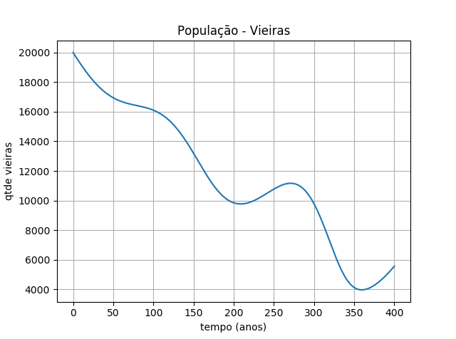

Dennis Zaramelo Felex - Engenharia Mecânica
Modelagem e Simulação do Mundo Físico - Professor Fábio H.
O aluno tem a tarefa de criar um modelo para um sistema físico envolvendo tubarões, raias e vieiras, realizando algum tipo de análise do modelo equacionado (ou seja, respondendo uma questão explicativa, preditiva ou relacionada à determinação dos parâmetros ideais para um sistema, no caso, acerca da dinâmica populacional entre esses animais marinhos).
Apresentada a proposta do trabalho, buscou-se saber a intensidade da diferença no número de vieiras, num determinado tempo, para diferentes taxas de caça de tubarões. Após 100 anos, como seria essa diferença, dados vários contextos de taxa de caça de tubarões?
Ler mais